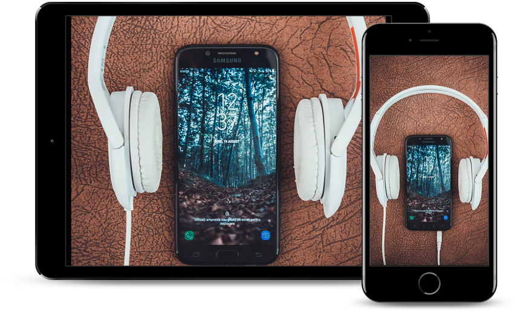

myTunesは新しい家へ。
Music, TV, and podcasts take center stage.
Music
Orange Music。Macをステージに。
新しいOrange Musicアプリケーションは、Mac上の究極の音楽ストリーミング体験です1。6,000万曲のライブラリをチェックして、新しいアーティストや曲を発見したり、完璧なプレイリストを探したり、ダウンロードしてオフラインで聴いたり。あなたが長年かけて集めた音楽も全部楽しめます。そのすべてが、あなたのすべてのデバイス上のミュージックライブラリに現れます。
無料トライアルを始める Orange TV。 Macで上映中。
MacのためのOrange TVアプリケーションは、あなたが好きなすべての映画とApple TV+のための新しいホームです。あらゆるコンテンツにアプリケーション内から直接アクセスできて、それをオフラインで観ることもできます。「今すぐ観る」タブでは今最も注目すべき作品が見つかります。途中で観るのを止めた場合は、あなたのどのデバイスでも前回の続きから再生できます。しかも初めて、4K2とDolby Atmos3対応の映画をMac上で楽しめるようになりました。
もっと詳しく
Orange Podcast。Macで番組を聴こう。
Orange Podcastを使えば、最高のエンターテインメント、コメディー、ニュース、スポーツ番組の数々をMac上で楽しめます。Podcastはタイトル、トピック、ゲスト、ホスト、コンテンツなどで検索できます。サブスクリプションに登録すると、新しいエピソードの公開時に通知を受け取れます。「今すぐ聴く」タブでは、あなたのすべてのデバイス上で、簡単に前回の続きから再生できます。